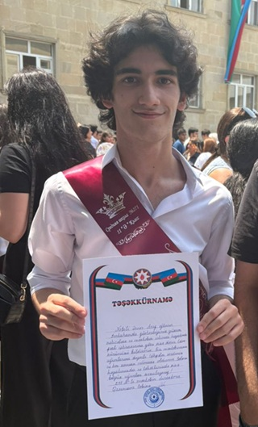

Hello! I'm Anvar Nabili, a passionate student of mathematics at ADA University. I have a deep interest in solving complex problems and exploring the beauty of mathematical concepts.
In 2025, I graduated from school number 271 with the highest overall exam score among russian section in State Exam Center exams - 661.4 points. I was in top ~1% of Group I "RK"(Mathematics-chemistry subgroup) in the whole country. I am currently studying Mathematics at ADA University, where I focus on advanced topics and practical applications of mathematical theory.

Beyond academics, I enjoy working on diverse projects that combine mathematics with technology. I'm always eager to learn new skills and take on challenging projects that push my boundaries.